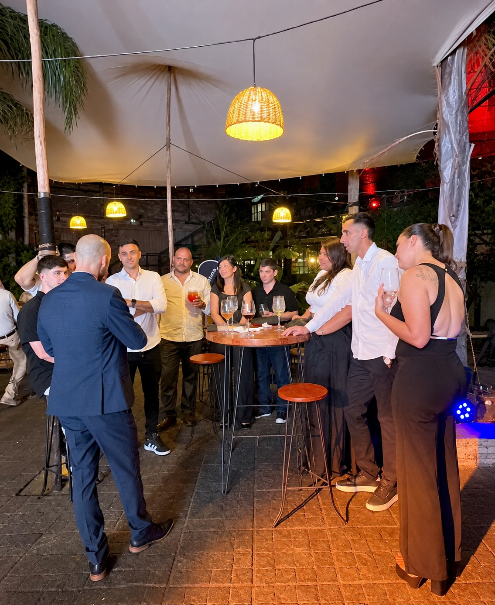
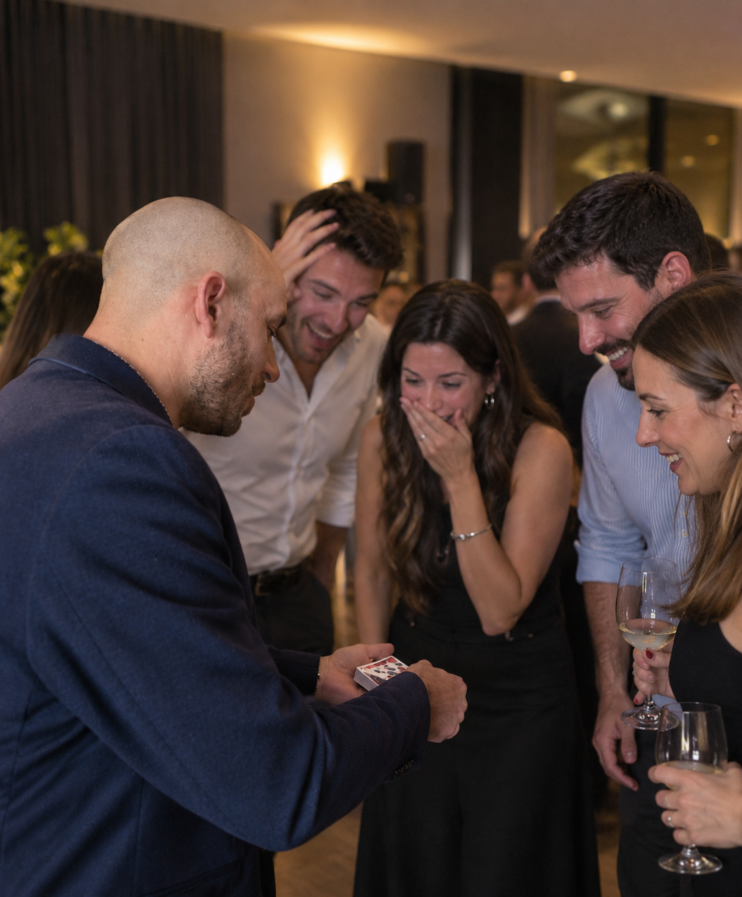

Recepción y cóctel
Magia durante la llegada de los invitados, mientras se encuentran, conversan y comienza el evento.
Una experiencia participativa y sorprendente que sucede entre los propios invitados, a centímetros de sus ojos y en sus propias manos.
Descubrir la propuesta ↓No hace falta un escenario para sorprender. La magia sucede entre los invitados, a centímetros de sus ojos y en sus propias manos.
Durante la recepción, el cóctel o entre las mesas, Mati recorre los distintos grupos compartiendo experiencias de magia, ilusionismo y mentalismo. Los invitados participan, toman decisiones y se convierten en protagonistas de cada presentación.
Mucho más que entretenimiento: una propuesta original para romper el hielo, generar interacción y conectar a las personas. Una experiencia cercana que suma un atractivo especial al evento y deja anécdotas que los invitados seguirán recordando y compartiendo.

Cada encuentro es diferente. Los invitados participan, toman decisiones y son parte de cada experiencia. La magia sucede frente a ellos, en sus propias manos y sin necesidad de alejarse de la mesa.
Una experiencia que combina sorpresa, participación y momentos únicos para compartir.
Cada presentación es una experiencia diferente. Magia, participación y momentos inesperados que convierten a los invitados en protagonistas.
La propuesta se adapta al espacio, a la cantidad de invitados y al ritmo de cada celebración.
Magia durante la llegada de los invitados, mientras se encuentran, conversan y comienza el evento.
Un recorrido por las mesas, compartiendo experiencias con cada grupo de invitados.
Encuentros cercanos donde todos pueden participar y formar parte de la experiencia.
Duración y recorrido adaptados a las características y necesidades de cada evento.

La magia de cerca puede incorporarse a celebraciones sociales, encuentros privados y eventos empresariales, acompañando cada ocasión sin interrumpir su dinámica.
Contame qué estás organizando, dónde será y cuántos invitados habrá. Podemos encontrar el formato que mejor acompañe tu celebración.
Consultar disponibilidad ↗